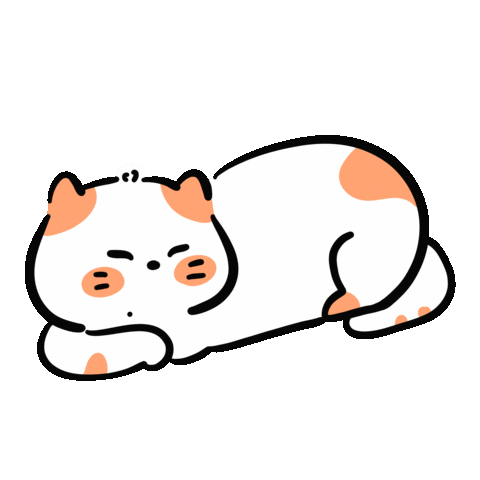

Curiosidades sobre gatos
Os gatos são animais fascinantes e cheios de curiosidades interessantes! Aqui estão algumas:
- Os olhos dos gatos têm células sensíveis à luz , chamadas de bastonetes, que lhes conferem excelente visão noturna. Eles podem ver com apenas um sexto da luz que os humanos precisam.
- Em média um gato passa 2/3 do dia a dormir. Isso significa que em 9 anos de vida, apenas está acordado 3 anos.
- Um gato faz cerca de 100 sons diferentes, enquanto um cão faz cerca de 10.
- Os gatos são conhecidos por dormirem bastante, chegando a dormir até 16 horas por dia . Isso ocorre porque são predadores naturais e precisam de bastante descanso para ter energia suficiente quando estão ativos.
 Github
Github
 Instagram
Instagram
 Linkedin
Linkedin
